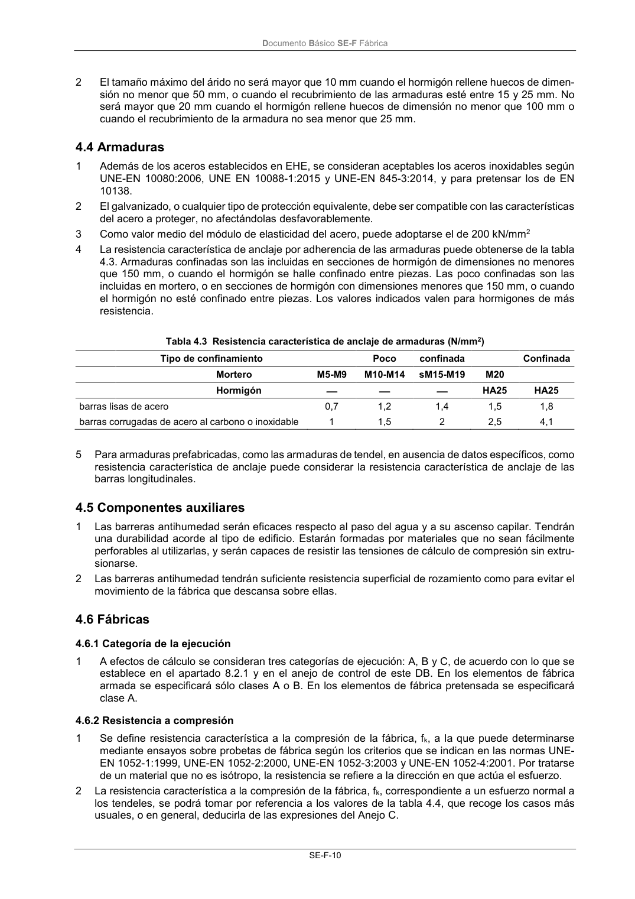

DB-SE-F · Fragmento de PDF p14 · versión 2019-12-20 · capa oficial
Formatos: JSON compacto · Markdown · PDF fuente
Ámbito del documento · texto del ámbito · documento y tablas
ID técnico a0036 · PDF pág. 14 · jerarquía no validada por persona · no es capítulo: sin_linea_de_encabezado · padre: raíz · literal original en el contenido: «4.6 Fábricas 4.6.1 Categoría de la ejecución»
4.6 Fábricas 4.6.1 Categoría de la ejecución 4.6.1 Categoría de la ejecución 1 A efectos de cálculo se consideran tres categorías de ejecución: A, B y C, de acuerdo con lo que se establece en el apartado 8.2.1 y en el anejo de control de este DB. En los elementos de fábrica armada se especificará sólo clases A o B. En los elementos de fábrica pretensada se especificará clase A.

PDF fuente redistribuible: copia fiel enlazada en esta página (SHA256 verificado).